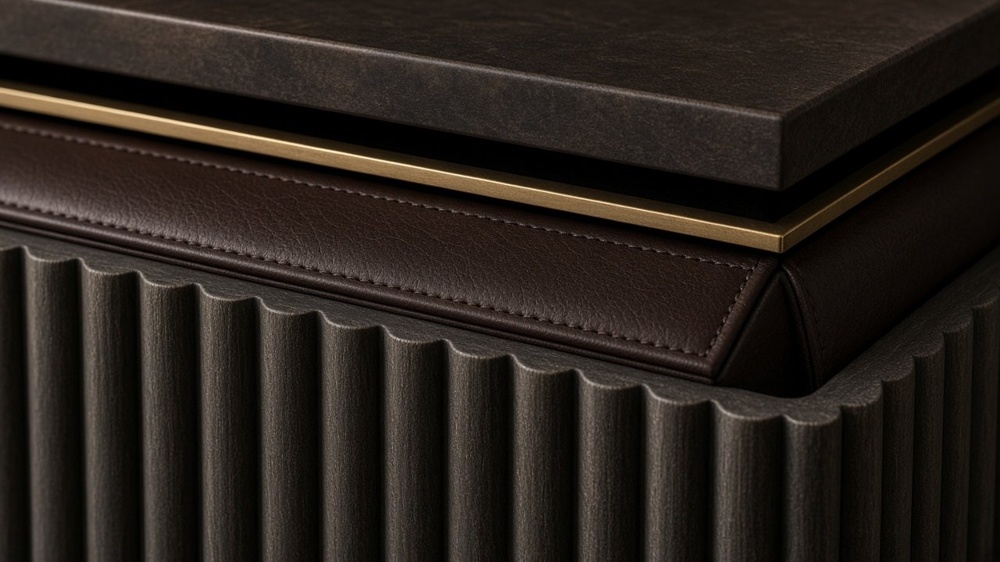
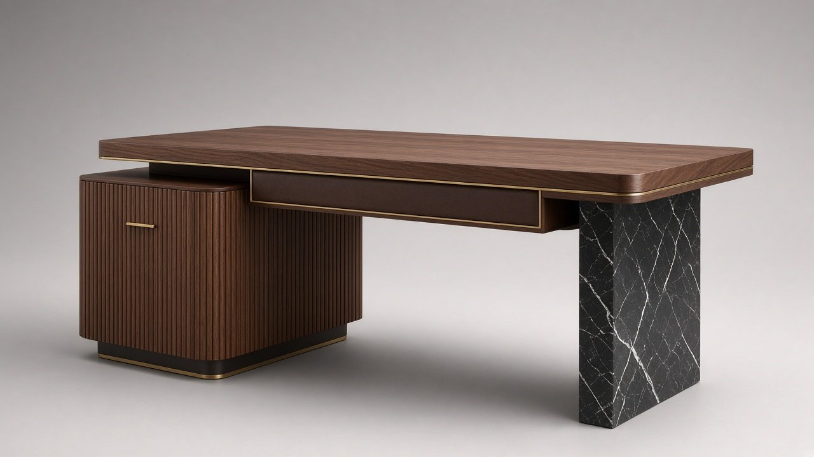

x.classList.remove('on'));this.classList.add('on')">
x.classList.remove('on'));this.classList.add('on')">← Coleção
N.º 01 · Coleção Meridiano
TEJO
Secretária executiva
Assimetria pura: um pedestal canelado em nogueira e uma lâmina de Nero Marquina sustentam um tampo que parece flutuar.
Preço desde 14.000 €sem IVA · valor indicativo · versões por medida sob consulta
Descarregar ficha técnica (PDF)
Dimensões
| L × P × A | 2200 × 950 × 750 mm |
| Superfície de escrita | 1100 × 520 mm |
| Altura útil | 710 mm |
Materiais
| Tampo | Nogueira americana |
| Pele | Plena flor semi-anilina Tabaco |
| Pedestal | Nogueira canelado |
| Lâmina | Nero marquina |
| Metais | Latão e bronze escovados |